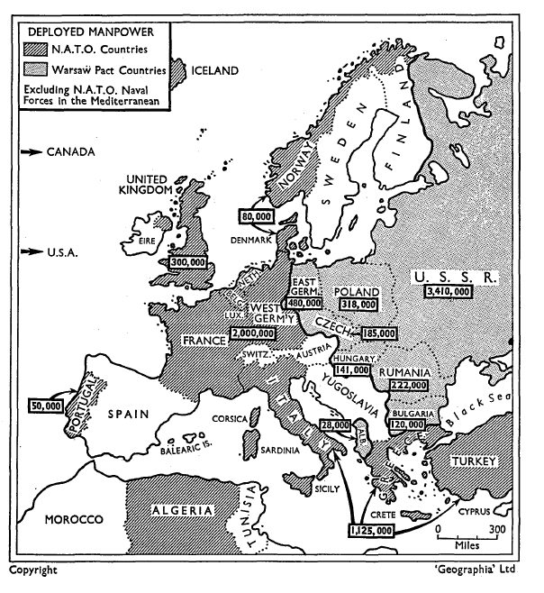
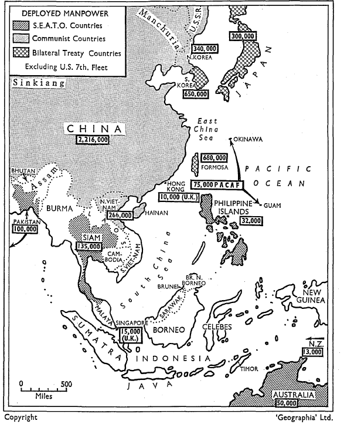

NORTH ATLANTIC TREATY ORGANIZATION
(A) Allied Command, Europe
Allied Command has its headquarters near Paris and stretches from northern Norway to the southern frontiers of Turkey and the Mediterranean. The Air Forces in Europe of the NATO Powers can muster 5,000 tactical aircraft which operate from some 220 operational bases. Nearly 5,000 miles of fuel supply systems are in service for the supply of the forces, 26,500 miles of communications and signal network are in use, and an effective early warning radar system has been developed. Deployment of tactical nuclear weapons into NATO land forces is now almost complete. They are principally the Honest John missile, but include some Corporals and 280 mm. cannon. Joint production in European NATO countries of two anti-aircraft weapons Hawk and Side- winder is continuing, as well as three types of aircraft, the F104G Starfighter, the Breguet Atlantic, and the Fiat G91 light fighters.
Allied Command Europe is divided into the following subordinate commands:
- Allied Forces Central Europe has its headquarters in Fontainebleau and com- prises 23 divisions (out of the required 30) assigned to the Supreme Commander as follows:
| United Kingdom | 3 | |
| United States | 5 | (plus 3 armoured brigades and 13 Hawk battalions) |
| France | 2 | |
| Germany | 8 | (a ninth is forming) |
| Belgium | 2 | |
| Netherlands | 2 | |
| Canada | 1 | (brigade) |
Out of these forces, a small mobile task force of 5 battalions with a nuclear capability has been created as a tactical reserve for NATO as a whole.
The tactical air forces available in the central area consist of some 3,000 aircraft, of which 250 US fighter-bombers and a smaller number of British Canberras, now being replaced by Vulcan 2s, and Valiants have a nuclear capability and a range which would cover important sections of eastern Russia.
The tactical air forces are organized into two main commands, 2nd ATAF (under British command) in northern Germany, which includes British, Dutch, Belgian and German forces; 4th ATAF (under Ameri- can command) in southern Germany, in- cludes American, Canadian, French and German forces.
Allied Forces Northern Europe has its headquarters at Kolsaas in Norway and is responsible for the defence of Norway, Denmark, Schleswig-Holstein and the Baltic approaches. It comprises approximately one Norwegian and one Danish division, as well as the tactical air forces of these countries and their naval forces. One German division in Schleswig-Holstein and units of the German Baltic fleet are also committed to AFNORTH.
Allied Forces Southern Europe has its headquarters in Naples and is responsible for the defence of the Mediterranean NATO area. The forces allocated to this command comprise 14 divisions from Tur- key, 9 from Greece and 7 from Italy, as well as the tactical air forces of these countries which comprise some 1,000 aircraft, and some naval forces. US forces in Italy and Greece also operate some Honest John guided missile units in conjunction with national forces. The US Sixth Fleet would come under command of AFSOUTH in time of war.
Allied Forces Mediterranean has its headquarters at Malta and is primarily responsible for safeguarding communica- tions through and across the Mediterranean. Six areas are under national control, two British, one French, one Italian, one Greek, one Turkish. There is also a special subor- dinate command for submarine forces in the Mediterranean. The national fleets of Italy, Greece and Turkey, together with a propor- tion of the British and - normally the French fleets, go to make up this command.
(B) Allied Command, Atlantic
Unlike the Supreme Allied Commander Europe, the Supreme Allied Commander Atlantic does not have forces permanently assigned to him in peacetime. The eight NATO maritime powers bordering the Atlantic maintain control of their forces in peacetime, but have earmarked certain of them for SACLANT in the event of war.
Broadly speaking, in wartime, SACLANT’s missions are to strike at enemy naval bases and airfields with aircraft from the Striking Fleet Atlantic, to main- tain control of the Atlantic sea lanes, to prevent enemy forces from striking at European and North American land bases from the sea, and to support the Allied Command Europe. To the Striking Fleet Atlantic would be assigned a considerable proportion of American and British attack aircraft carriers.
The surface ships in the navies of the eight Atlantic maritime nations include about 25 aircraft carriers. Of these, six American carriers have been converted for anti-submarine duties. Britain has 3 carriers, France, Canada and the Nether- lands have one each. The carriers designated for anti-submarine missions carry American and/or Canadian S2F Trackers, British Fairey Gannets, largely replaced by Sea Vixens, and Scimitars and Wessex helicopters, French 1050 Alizes and anti-submarine helicopters. In all, NATO anti-submarine carriers could embark about 400 to 500 aircraft of various types.
Other surface ships in these national navies include about 440 destroyers, frigates and destroyer escorts. (The United States has over 260 of these types, the Royal Navy has over 47 to contribute, while the other navies have lesser numbers.) A considerable proportion of these anti-submarine ships are of World War II construction but many have been modernized and progress is being made in building replacements.
With regard to submarines the trend in most navies has been to change their role from commerce destruction to anti-submarine warfare, although they retain the former mission in addition. Of the 16 nuclear and 243 conventional submarines belonging to NATO maritime countries, well over 150 would be available for anti-submarine duties in the Atlantic.
The surface and submarine forces are supported by long-range patrol aircraft such as the American Neptune, the British Shackleton, and Canadian Argus. In all, there are about 375 maritime patrol aircraft available for anti-submarine service in the eight NATO countries bordering the Atlantic.
(C) The Channel Command
The role of Channel Command is to exercise maritime control of the English Channel and southern North Sea, to deny it to the enemy, to protect the sea lines of communication and to support operations conducted by SACLANT and SACEUR. To this end, Channel Command has at its disposal a considerable proportion of the national naval forces of Belgium, France, the Netherlands and the United Kingdom.
Norad
North American Air Defence Command is maintained under an agreement between the United States and Canada, which integrates the Canadian and American Air Defence Commands. The Headquarters are at Colorado Springs. Canadian Air Defence Command currently has nine squadrons of CF-100 interceptors armed with air-to-air missiles. American Air Defence Command weapons consist of F-104 all-weather interceptors and Bomarc missiles. The defence of American cities depends mainly on 15 Nike-Hercules ground-to-air missile units. In 1962, Canada should receive 2 Bomarc missile units for which the sites in Quebec and Ontario, are ready, and for the opera- tion of which 500 men have been trained. These defences are supported by an ex- tended radar system. Supplementing the BMEWS station in Greenland and Alaska, there are three lines of radar stations in Canada, and the ‘contiguous radar system’ in the United States is supported by ships and radar aircraft in the Pacific and the Atlantic and a number of ‘Texas Tower’ radar stations near the Atlantic coast.


NATIONAL FORCES
BELGIUM
General
Population: 9,200,000
Length of military service: one year
Total armed forces: 110,000
Defence Budget $321,432,302
Army
Total strength: 85,000
2 mechanized divisions
Air Force
Total strength: 20,000
Approximately 200 fighter and reconnaissance aircraft, including F84s, CFlOOs, and Hunter VI
CANADA
General
Population: 18,000,000
Voluntary military service
Total armed forces: 119,300 increasing to 135,000 (of which up to 14,000 are stationed in Europe)
Defence Budget: $1,614,500,000
Army
Total strength: 47,800 increasing to 53,750
1 brigade group in Germany
3 brigade groups stationed in Canada
Air Force
Total strength: 51,500, increasing to 52,490
5 all-weather fighter squadrons operating under NORAD now being re-equipped with the F.101 Voodoo 8 day fighter squadrons
4 all-weather fighter squadrons, equipped with the F.86D and CF.100, stationed in Europe
4 transport squadrons
4 maritime squadrons (40 long range maritime aircraft are earmarked for assignment to SACLANT in the event of hostilities)
DENMARK
General
Population: 4,565,500
Length of military service: 16 months
Total active armed forces: 43,000
Defence budget: $179,068,627
Army
Total active strength: 29,000
2.667 infantry brigade groups
Air Force
Total active strength: 7,000
3 fighter-bomber squadrons (F.100)
3 all-weather fighter squadrons (F.86D)
1 interceptor day-fighter squadron (Htmter)
1 reconnaissance flight (F.84F)
1 transport squadron
1 search and rescue squadron
1 Nike battalion is established in the Copenhagen area
Apart from 1 ocean escort, 1 coastal escort and the transport and SAR squadrons, all forces are earmarked for NATO
FRANCE
General
Population: 45,000,000
Military service: 27 months
Total armed forces: 1,008,791
Defence budget: $2,438,177,874
Army
Total strength: 804,000
2 divisions are at the disposal of SACEUR in Germany and a small brigade, which is being reinforced, is in Berlin
2 divisions are now stationed in France and 2 in Algeria
The Army is equipped with the French SS-10 and 11 solid propellant anti-tank guided missile
Air Force
Total strength: 137,000
The Air Force is organized as follows:
- The 1st Tactical Air Force under NATO operational command, equipped with F84-F86 and Mirage III fighters
- The Air Defence of the Territory, equipped with Mystere IV, Super Mystere B2 interceptors and Vautour and B.26 bombers
- T r a n s p o r t C o m m a n d , equipped with some 300 Nord 250s and Breguet
- A Tactical Forces Command which is now being formed
GERMANY
General
Population: 53,963,000
Length of military service: 1 year
Total armed forces: 330,000 increasing to 365,000
Defence budget: $2,796,000,000
Army
Total strength: 224,000
4 armoured infantry divisions
2 armoured divisions
1 mountain division
1 airborne division
(All assigned to SACEUR)
2 more armoured infantry divisions and 1 armoured division are in preparation
Air
Total strength: 80,000
1 transport wing
4 fighter-bomber wings
1 fighter wing
1 reconnaissance wing
All at the disposal of NATO
GREECE
General
Population: 8,357,000
Length of military service: 24 to 30 months according to the arm of the service
Total armed forces: 159,000
Defence budget: $176,430,000
Army
Total strength: 120,000 (probably more)
I armoured division
II infantry divisions, including Nike and Honest John units
Air Force
Total strength: 22,000
12 squadrons equipped with 400 F.84 and F.86
Some units of ground-to-air missiles
ITALY
General
Population: 50,000,000
Length of military service: 18 months for the Army and Air Force, 24 months for the Navy
Total armed forces: 466,392
Defence budget: $ 1,189,284,029
Army
Total strength: 369,000
5 infantry divisions
5 infantry brigades
2 armoured divisions
5 mountain brigades
Honest John and Corporal supporting units
Air Force
Total strength: 55,978
3 fighter-bomber wings
2 fighter wings
3 units of ground-to-air missiles
LUXEMBOURG
General
Population: 350,000
Length of military service: 9 months
Defence budget: $7,000,000
5,500
Army
NETHERLANDS
General
Population: 11,556,008
Length of military service: 21-24 months for the Navy and Air Force for non-specialists 20-22 months for the Army
Total armed forces: 142,000
Defence budget: $530,000,000
Army
Total strength: 98,000
2 infantry divisions assigned to NATO
Air Force
Total strength: 21,000
Approx. 225 fighters and reconnaissance aircraft
NORWAY
General
Population: 3,600,000
Length of military service:
16 months for the Army
18 months for the Navy and the Air Force
Total armed forces: 37,000
Defence budget: $176,000,000
Army
Total strength: 20,000
1 division
Air Force
Total strength: 10,000
140 F.86K fighters
And 50 reconnaissance maritime and transport aircraft
PORTUGAL
General
Population: 9,150,000
Length of military service:
18 months to 24 months for the Army
36 months for the Air Force
48 months for the Navy
Total armed forces: 80,000
Army
Total strength 58,000 of which about 30,000 are in Angola.
One division remains at the disposal of NATO
Air Force
Total strength: 12,500
350 aircraft including a number of F.84G fighter-bombers under national command
TURKEY
General
Population: 28,000,000
Length of military service:
24 months for the Army and Air Force
36 months for the Navy
Total armed forces: 500,000
Army
22 divisions
Air Force
1 squadron of F. 100s,
2 squadrons of F.84s and 86s
UNITED KINGDOM
General
Population: 52,000,000
Military service: Voluntary.
National Service ends in 1962
Total armed forces: 454,330
Defence budget: $4,653,360,000
Army
Total strength: 200,000
Of this total 53,000 are stationed in Germany and Berlin, some 20,000 in the Mediterranean, Middle East and Africa, and 20,000 in the Far East.
terms of infantry battalions, the division is:
Germany and Berlin 20;
Middle East and Africa 13;
Caribbean 1; Far East 4.
In Malaya, these form part of a Commonwealth Brigade Group. There are 7 Gurkha battalions in the Far East, but one is shortly to be transferred to Britain.
In terms of formations, 7 brigades are committed to NATO in Germany, 1 brigade is in Berlin, 3 brigades are based in the Middle East and Africa. In the United Kingdom, 3 brigades, plus most of the Parachute Brigade form the strategic reserve.
The armoured formations in Germany are equipped with Centurion and Conqueror tanks, some of which have received a 105 mm. howitzer. Three regiments are now equipped with Honest John and one with Corporal missiles (see US).
The deployment of the Thunderbird anti-aircraft missile is to be completed soon. The Vigilant anti-tank missile may shortly become operational.
Air Force
Total strength: 158,000 men
Bomber Command
About 180 V-bombers, including Vulcan Us which can deliver the Skybolt stand-off bomb and are now in squadron service. Although Blue Steel is making its final trials, it is doubtful whether it will be in service in 1962.
Fighter Command
The supersonic Lightning is now in service, armed with the Firestreak air-to-air missile.
This is also carried by the Javelin all-weather fighter.
The deployment of the Bloodhound is expected to be completed early in 1962. An improved version, capable of being transported by air, is also being developed.
The BMEWS station at Fylingdale should be completed by the summer of 1962.
Coastal Command
Main equipment is the high endurance Shackleton which can remain airborne for 24 hours without refuelling.
Transport Command
Main force for long-distance airlift comprises 23 Britannias and 10 Comets. They are supplemented by the medium-range Beverley and Hastings aircraft. 5 Argosies will be in service by the end of 1961.
Tactical Aircraft
The Canberra, of which the later versions are capable of 580 m.p.h. at 40,000 feet, and the Hunter fighter, speed 700 m.p.h. are the basic aircraft of RAF tactical power overseas.
UNITED STATES
General
Population: 181,000,000
Military service: Selective service for two years, but over 90% of men serving in the US forces are volunteers
Total armed forces: 2,606,000
Estimated defence expenditure: $48,506,000,000
Army
Total strength: 967,000
The Army consists of a Strategic Army Corps of two airborne and one infantry divisions, and 11 combat divisions. The present increase to over 1,000,000 by the end of 1961 will raisethe number of combat divisions to 16.
The Seventh Army of 5 divisions and 3 armoured brigades, and comprising 200,000 men, is allocated to NATO and sta tioned in Germany. This strength may be increased to 300,000 during 1962. Three divisions are stationed in the Far East.
MISSILES
- Surface-to-surface short range include:
Redstone: A liquid-propellant missile, range 200 miles
Pershing: a solid-fuel development of Redstone, range 100-300 miles
Corporal: range 75 miles
Sergeant: to replace Corporal, range 75 miles, has a self-contained guidance system
Honest John: unguided field artillery missile, range 12 miles
Lacrosse: a solid propellant rocket against field fortification, range 20 miles
Little John: unguided field artillery lightweight missile
SS 10 and 11: solid propellant anti-tank missile (See France)
- Surface-to-air
Nike-Ajax: liquid-powered guided rocket, range 25 miles
Nike-Hercules: solid propellant guided missile, range 80 miles
Hawk: solid propellant rocket for use against low-flying planes. Range 20 miles. Progress is being made with an improved version
The equipment of the American Army with the M60 tank is still proceeding. The M60 weighs 50 tons, mounts a 105 mm. gun. The 8 in. selfpropelled M55 howitzer is also in use. It has a range of over 10 miles and can fire a nuclear shell. Most armoured units are still equipped with the 44-ton M48 tank.
Air Force
Total strength: 824,900. This may be increased to 888,000 by the summer of 1962
There are 91 wings, of which 88 are combat wings consisting of 37 strategic wings, 19 air defence wings and 32 tactical wings. (There are 45 aircraft in a bomber wing and 75 in a fighter wing.) The creation of two more tactical fighting wings has been decided.
Strategic Air Command (see strategic forces, page 8)
The B.47 has a range of 3,250 miles. The B.52, which can carry the Hound Dog air-to- surface missile in addition to free-falling bombs, has a range of 6,000 miles, with a speed of over 650 m.p.h. Both can extend their range by in-flight refuelling, which is provided by a fleet of KC 135 strata- tankers capable of a speed of 550 m.p.h. and slower KC 97s.
The B.58 is capable of flying at Mach 2.
The tactical bombers and fighters available to Tactical Air Command and North American Air Defence Command include:
F.100 Super Sabre interceptor fighter. Speed of 1,000 m.p.h. Range 1,800 miles without aerial refuelling.
F.101 Voodoo long-range fighter. Cruising speed 1,200 m.p.h. Range 1,000 miles.
F.102 Dagger. Supersonic all weather interceptor (principally for North American Air Defence).
F.104 Starfighter. Has reached speeds of 1,400 m.p.h. and height of 91,000 feet.
F.105 Thunderbird. Single-seater fighter-bomber. A more powerful version is now being produced, able to refuel in flight and carry heavier payloads of non-nuclear warheads, e.g. the Bullpup or Sidewinder missiles.
F.106 Dart. All-weather interceptor, with speed of over 1,500 m.p.h.
Transport: 129 new long-range airlift aircraft are to be procured by the middle of 1962.
The Military Air Transport Service at present comprises about 480 4-engined piston aircraft designed for cargo and troops.
MISSILES
- Surface-to-surface
Atlas: liquid-fuelled ICBM, range 6,000 miles. Speed 15-20,000 m.p.h.
Titan: liquid-fuelled ICBM, capable of carrying a heavier nuclear warhead than Atlas. Range 6,000 miles.
Jupiter: liquid-fuelled IRBM, range 1,500 miles.
Thor: liquid-fuelled IRBM, range 1,500 miles.
Matador: jet-powered winged missile, range 300-500 miles.
Mace: improved version of Matador. Range 350 miles, speed supersonic, nuclear warhead.
- Air-to-ground
Hound Dog: for use on B.52s.
Range 350 miles, speed supersonic, nuclear warhead.
Bullpup: see under Navy.
- Surface-to-air
Bomarc: long-range ram-jet missile interceptor, range 400 miles, speed m.p.h.
- Air-to-air
Genie: missile with a nuclear warhead carried by fighter-interceptors, range 2-4 miles, speed Mach3.
Falcon: with nuclear or non-nuclear warhead, range 5 miles, speed supersonic.
Marine Corps
Total strength: 177,000. This will be increased to 190,000 in the first half of 1962. Organized in three divisions, each with thenown air wing and amphibious support